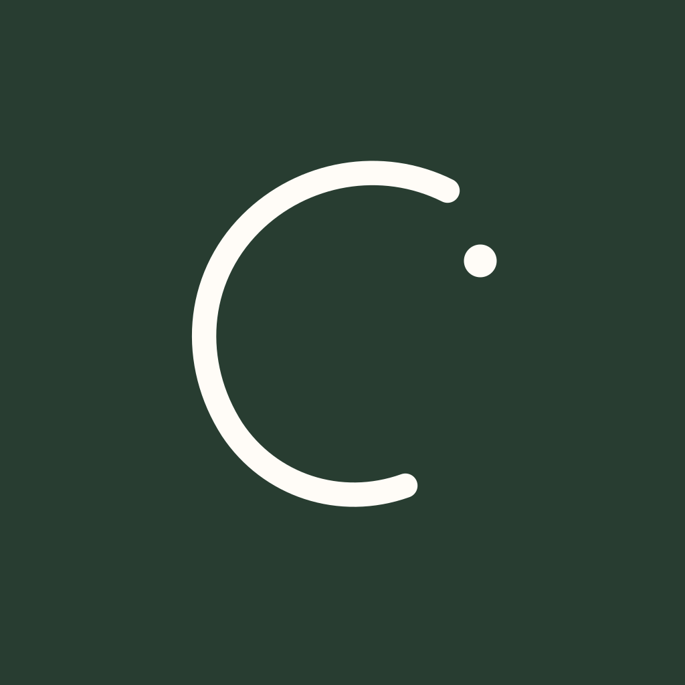

Biểu tượng chính
Xanh rừng trên nền sáng. Dùng trong giao diện, ấn phẩm và khi chỉ có một màu.

64 px · 40 px · 20 px favicon
App icon · preview mask

Hệ nhận diện và nguyên tắc giao diện để đưa trải nghiệm Một chút yoga vào giai đoạn phát triển. Dấu hiệu trừu tượng, chất liệu ấm, thông điệp rõ và chuyển động vừa đủ.
Một cung mở và một điểm tĩnh: giữ nguyên hình qua mọi cỡ và nền.
Tĩnh tại, gần gũi, có chủ ý; tránh phô trương hay hứa hẹn quá mức.
Khoảng mở là lựa chọn hiện tại; tên tiếng Anh vẫn cần kiểm chứng.
Giữ hình cung và vị trí chấm thống nhất. Đổi màu theo nền; giảm chi tiết chữ trước khi giảm cỡ biểu tượng.
Xanh rừng trên nền sáng. Dùng trong giao diện, ấn phẩm và khi chỉ có một màu.

Chỉ dùng trên nền tối đồng nhất. Không đảo màu tự động bằng filter trong sản phẩm.
Tiếng Việt là lock-up mặc định. Tên tiếng Anh được ghi rõ là giả thuyết trong nghiên cứu.
Một chút yogaA Little YogaMàu hành động đất nung được làm tối để chữ ivory dễ đọc; sage dành cho bề mặt lớn và trạng thái chọn.
#FFFCF7Nền chính#283D3111.39:1 trên ivory#425D487.10:1 trên ivory#A9C79DBề mặt lớn#E8EEE4Chọn / nhấn nhẹ#9A563E5.44:1 trên ivory#8E4B356.40:1 + ivory#F5E8DDBề mặt hỗ trợ#56665A5.96:1 trên ivory#E2E4DBĐường phân cáchGeorgia tạo sắc thái tạp chí; sans hệ thống ưu tiên đọc nhanh, hiệu năng và ký tự tiếng Việt.
Chia sẻ một chút về hôm nay. Chúng tôi sẽ giúp bạn chọn một buổi tập phù hợp trong nội dung của giáo viên.
Thang 4 px · ưu tiên 8 / 12 / 16 / 24 / 32 px.
12 px controls · 16 px cards · 24 px feature blocks · pill actions.
Vòng focus đất nung 2 px; trạng thái không dựa vào màu đơn lẻ.
Ba cách kể cùng biểu tượng, không thay đổi hình học. A dùng trong splash; B và C dành cho chiến dịch nếu được kiểm chứng.
Lock-up app hoàn tất trong 960 ms; không chặn thao tác.
Phim thương hiệu / bìa nội dung. Âm thanh tùy chọn, im lặng mặc định.
Intro chiến dịch hoặc lớp học, không lặp trong điều hướng app.
Hình ảnh và giọng nói thương hiệu hỗ trợ người dùng chọn, làm theo, phản hồi và quay lại; thư viện lớn không phải lối vào chính.
Thời gian, năng lượng, ý định và tự khai báo theo từng vùng; có chưa rõ / không khó chịu / bỏ qua.
Hỏi ngắn, nói rõ vì sao gợi ý hợp, cho phép chỉnh và chỉ chọn nội dung giáo viên đã xác nhận.
Preview động tác, bài tập có hướng dẫn, điều khiển theo trạng thái thật và lựa chọn nhẹ hơn.
Tốt hơn, như cũ, khó chịu hơn, chưa rõ, bỏ qua; từng vùng độc lập với cảm giác chung.
Ảnh chụp có ngày giờ, khoảng trống và ghi chú thật; không làm mượt dữ liệu thiếu.
Nội dung giáo viên và cài đặt hỗ trợ vòng luyện tập, không chiếm ưu tiên của lựa chọn hôm nay.
Source SVG dùng cho app, truyền thông, icon nền tảng; hệ token sẵn cho kỹ thuật chuyển qua component và native style.